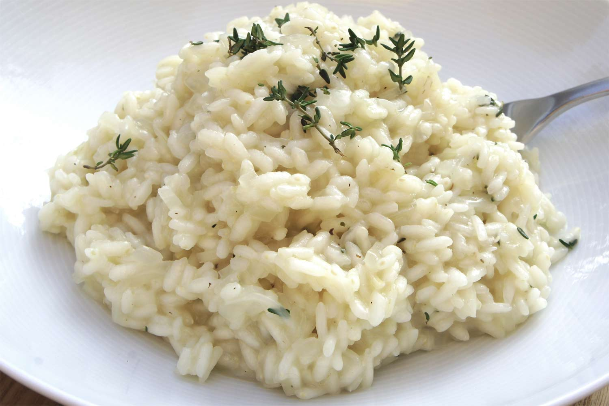

Risotto blanco

Description
El risotto blanco es un plato sencillo que sólo requiere constancia y paciencia
Veamos como hacerlo aqui
Ingredients
- Caldo de pollo o verduras 1l
- Arroz arborio 400g
- Aceite de oliva virgen extra 2 cucharadas
- Mantequilla 90g
- Una cebolla
- Dos ramas de apio
- Dos dientes de ajo
- Queso parmesano o Grana Padano 115g
- Vino blanco seco 400ml
- Sal y pimienta negra molida
Steps
- Calentar el caldo en una olla tapada dejando el caldo al mínimo
- Picar todas las verduras y saltearlas con la matequilla y aceite de oliva en una cazuela ancha
- Con las verduras ablandadas, añadir el arroz hasta que quede translucido, ~1m
- Remover constantemente e ir añadiendo el vino poco a poco hasta que se evapore el alcohol
- Añadir el caldo caliente poco a poco, remover constatemente e ir añadiendo más según el arroz lo absorba
- Cuando el arroz este blando estará listo
- Apartar del fuego, salpimentar y añadir el resto de la mantequilla y el queso rallado, remover bien
- Dejar reposar 2m fuera del fuego con el calor resiudal y la olla tapada
>